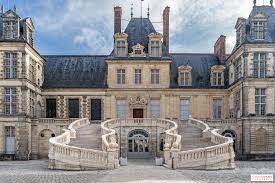

Let's Travel The World!
Top 10 des endroits recommandés à visiter en France
Tour Eiffel - Paris : Symbole emblématique de la France, la Tour Eiffel offre une vue imprenable sur la ville depuis ses ponts d’observation.

Musée du Louvre - Paris : L’un des musées d’art les plus grands et les plus célèbres du monde, abritant des milliers d’œuvres d’art, dont la Joconde.

Château de Versailles - Versailles : Un magnifique palais connu pour son architecture opulente et ses magnifiques jardins. C’était l’ancienne résidence royale.
Mont Saint-Michel - Normandie : Abbaye médiévale perchée sur un îlot rocheux, le Mont Saint-Michel est classé au patrimoine mondial de l’UNESCO et véritable merveille architecturale.
Cathédrale Notre-Dame de Paris - Paris : Ce chef-d’œuvre gothique est un symbole de Paris et présente de superbes vitraux et sculptures.
Château de Chambord - Val de Loire : Un château Renaissance avec un escalier à double hélice distinctif, entouré d’un magnifique domaine boisé.

Panthéon - Paris : Un mausolée néoclassique qui abrite les restes de personnalités françaises notables, dont Voltaire et Marie Curie.
Château de Fontainebleau - Fontainebleau : Palais royal à l’histoire riche, il a servi de résidence aux monarques français de Louis VII à Napoléon III.

Carcassonne - Occitanie : Une ville fortifiée médiévale magnifiquement conservée avec un double anneau de murs, des ponts-levis et des tourelles.

Cimetière et mémorial américain de Normandie - Normandie : Un site solennel et émouvant qui rend hommage aux soldats américains morts en Europe pendant la Seconde Guerre mondiale, en particulier lors du débarquement.